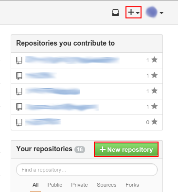
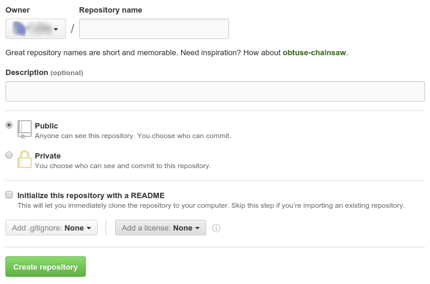

2-1Basic Operations2-1Basic Operations
2-1Basic Operations2-1Basic OperationsNow that you know how exactly git works, this lesson will teach you how to perform the basic tasks in git: committing, pushing, pulling, fetching, merging, and ignoring.
If you use a GUI to interact with git, then most of these operations should be relatively simple and straightforward. However, a few of these operations, namely merging and ignoring, still require a few pieces of information, even when done through a GUI.
Of course, before you can even start using git, you need to create a repository to store your code. You can do this either locally or on the website that hosts your repositories.
There are a number of websites that will host git projects for you, but we will explore how to use GitHub here.
Regardless of where you actually first initialize your repo, you need to create a remote repository in order to be able to push and pull to/from the remote.
GitHub has a number of locations on their website where you can create a new repository. There are two places on the front page where you can create a new repository.
When you select this option, you will get the following screen:
The first thing you should do here is give your repository a name. Make sure that you give the repository a good name (as GitHub suggests you do). You don't have to use GitHub's suggestion, but it should be either descriptive of the software contained in the repository or a good, memorable name.
The Description will appear on the repository's link on your GitHub page, and at the top of the repository's page. This is a good, short way to tell other people all about the code in your repository.
If you have a paid GitHub account, then you can create a private repository. Otherwise, your only option here is a public repository.
This last step here is the key. This allows you to automatically generate files and place them in your repository, so that you don't have to initialize it locally.
If you already have a repository locally that you want to push to GitHub, then it would be a good idea to leave this option unchecked.
However, if you want to get GitHub's template .gitignore for your repo, a LICENSE, or a template README, it is still possible to import your local repository, you'll just have to pull on your local repo before you push.
Grabbing the .gitignore is generally a good idea. As was discussed in lesson 1-1, there are a number of files that may exist in your repository that you do not want to commit.
GitHub keeps a good list of these files for a number of these languages, so it would be a good idea to open that drop-down menu and look for the language that you expect to be using for your project.
The license basically lets other developers know what restrictions you have about distributing and modifying your source. Open-source licenses generally tend to allow other developers to distribute and modify your code, but they still have to credit you as the original developer. If you want more information about the different types of licenses available to you, see here.
Once you have completed the dialog to your liking, click Create repository
. This will create the repository under the selected account and redirect you to the repository's home page.
If you created a README, a gitignore, or a license file, you will see these files in the repository viewer, otherwise the respository will be empty and GitHub will have some instructions on how to import a local repository.
If you don't yet have a repository locally, and you have files in the GitHub repository, then you need to clone it (the same goes for already-existing repositories).
If you use a GUI, look around for it's Clone URL
or Clone URI
option, and then give it the clone URL, which is on the side of the page.
If you use the command line, then cd into the directory you want the repository to be in, and then type git clone https://github.com/user/repo.git,
replacing user and repo with your username and the repository's name, respectively (leave the .git extension, you will need that).
This will copy the GitHub repository exactly in its current state into a folder that has the same name as the repository. At this point, you're good! The local repository was automatically set up to be associated with the remote when you cloned, so you can get to work right away!
If you already have code that you wish to upload to GitHub (or some other server), then this option is probably the better option. You will, at some point, want to create a repository on the server so you can push your code.
The first step is fairly simple. If you use a GUI, look for an option like Initialize a repository here
(EGit users will find this option by right-clicking on the project, selecting Team
and then Share project
). It may present some configuration options, but the defaults shouuld be fine.
If it asks for a remote URL, you can give it the clone URL of the remote repository if you have made it, otherwise just skip it for now (you'll do that next).
If you use the command line, initializing the repository is quite simple: just cd into the root of your directory and type git init.
Regardless of how you do it, this operation will initialize a git repository in the directory where your code is.
At this point, git will begin to track changes to your code. However, without a .gitignore, it will assume that every file it finds should be tracked, which may not be what you want.
It would be a good idea to avoid committing until you are all set up.
The next step is to associate your local repository with the remote repository. If you haven't set up a repository on the remote server yet, you should do that now.
Once you have the repository URL, go back to your git tool. If you use a GUI, look through the repository's settings for remotes
.
You will want to add a new remote called origin
that points at the clone URL. If you use the command line, simply type git remote add origin https://github.com/user/repo.git, again, with your specific clone URL as the last argument.
At this point, if you already initialized the remote repository, do a pull to get the files that were initialized with the remote repository. Other than that, you are ready to go!
After you have made any significant modifications to your code, it is always a good idea to commit your changes.
If you are using a GUI, selecting the Commit
option will usually include this step.
However, if you are using command-line git, there is one step you need to do before you can run the commit command.
In order to see whether or not you have any outstanding changes in your repository, type git status. This will show a message like this:
On branch git-tutorial
Your branch is up-to-date with 'origin/git-tutorial'.
Changes not staged for commit:
(use "git add <file>..." to update what will be committed)
(use "git checkout -- <file>..." to discard changes in working directory)
modified: git/ch1/index.html
modified: git/ch2/basic-operations.html
modified: git/ch2/index.html
no changes added to commit (use "git add" and/or "git commit -a")
This message tells you all of the changes that have been made to the repository since the last commit. Review this message and decide which files you want to commit, and then type git add path/to/file.
So, for example, if you wanted to add the git/ch2/index.html file above, you would type:
git add git/ch2/index.html
Or, if you want to add all of the tracked files listed by git status, you can type:
git add -u
Also, you can add all changes (tracked or untracked) by using:
git add -A
Now that you have added files to the staging area, you need to actually make the commit. To do this, type git commit.
Tip: You can combine the addition step with the commit step by typing:
git commit -awhich is equivalent to doing:
git add -u
git commit
Running the commit command will launch your terminal's text editor.
There will be an empty line, and then a comment with all of the changes presently in the staging area. (The comment won't be a part of the commit message).
When you make your commit message, be sure to follow the commit message guidelines laid out in the previous chapter.
In order to sign off on the commit, save the file. In the vi text editor, to do this you need to leave insert mode, type :w, and hit Enter.
In the nano text editor, strike Ctrl+O, and then Enter.
If you have a GUI, you can go straight to the Commit
option. Most GUIs present the git add step right in the commit dialog, usually underneath the commit messsage.
Check/uncheck any files that you do/do not want to be included in the commit, type your commit message, and then click Commit
(some GUIs may even have a Commit and push
option, if you're lucky).
If you know that changes have been made to the remote repository, you will want to pull the changes before you push your own.
The overall operation is easy to perform, if you don't have any need to perform the two steps separately (and in most cases, you won't). In the GUI, just look for the Pull
option.
The syntax is as follows:
git pull <remote-name> <branch>
In most cases, your remote-name will be origin, unless you have other remotes configured (for example, your repository is a fork).
So, if you want to pull the master branch from origin, you would type:
git pull origin master
However, there may be cases where you want to run each step individually.
Fetching is just as easy as pulling, if not easier. In a GUI, just find the Fetch
option. On the command line, simply type:
git fetch
This will update your local repository's remote-tracking branches, which basically just keep track of the status of the remote.
In order to merge manually fetched changes into your repository, you need to tell git which remote-tracking branch you want to merge into the working tree. This should always be the same remote branch as your current branch (unless you are doing branch merges, which will be discussed in more detail in lesson 2-3).
However, just typing master will not accomplish this, since master alone refers to the local master, and not the remote-tracking master.
To differentiate the two, you need to add <remote-name</ to the beginning of the branch name. So, to merge the changes from master on the origin remote, you would type:
git merge origin/master
In a GUI, the merge dialog will present all of the branches available to it — both local and remote-tracking branches.
Remote-tracking branches may be presented as shown above (such as origin/master
), or you may also see them as they appear in the git repository directory (refs/remotes/origin/master
).
Select the proper remote-tracking branch from the dialog's Merge from
setting, and then click Merge
.
If there are no merge conflicts, you will have manually completed the pull process. If there are conflicts, resolve those first.
Pushing is very simple. In your GUI, look for the Push
option, and make sure to select the branch you want to push.
On the command line, the git push syntax is identical to that of git pull:
git push <remote-name> <branch>
So, pushing the master branch to the origin remote would look like:
git push origin master
As was mentioned in lesson 1-1, you don't want to be committing every file in your working directory.
The GitHub templates are good starts, but they don't always include everything that you may want to ignore.
So, following the guidelines listed in lesson 1-1, look around for files in your directory that you do not want to be pushing to the repository,
and then edit (or create) the .gitignore in the root of the working directory.
In this file, you can specify file patterns for git to ignore. They can be specific filenames, or search expressions using the wildcard character, *.
For example, if you wanted to ignore any file with the .exe file extension, you would add:
*.exe
You can also tell git to ignore entire directories (in the case of bin directories and the like) by adding a trailing /.
bin/
However, with this syntax, git will only ignore folders on the root of the working directory of the name bin.
If you wanted to ignore every folder that has the name bin, you need to include a wildcard:
/*/bin/
You can also put comments in the .gitignore file if you want to leave a reason why you are ignoring a specific file by using shell-style comments (#):
# This is a comment
# This is another comment
# There are no multiline comments. If you want to wrap your comment to a new line,
# you need to put the '#' character at the beginning of the new line.
# This is to ignore any built binaries.
/*/bin/
# This will ignore any directory named 'bin', including any bin directories on the root of the directory,
# since nothing will still be matched by '*' (//bin/ evaluates to /bin/).
When git finds any new files that match the file patterns listed in the .gitignore, it will omit the files from the git status message,
and it will not add them to the staging area unless you force it to.
Although git will ignore unversioned (uncommitted) files that match the patterns in the .gitignore, if those files have already been committed, then git will not start ignoring them.
In order to make git stop versioning the files, you need to actually delete the file from the repository.
To do this, open the git command line (most GUIs will come with a command line tool), and cd into the folder where the file you want to unversion is located, and then type the following:
git rm --cached filename
where filename is the name of the file you want to un-version.
Tip: You can auto-fill filenames in the terminal by hitting the
Tabkey after you have typed the first few letters of the filename. If there are multiple files in the directory that match those characters, the terminal will complete as many characters as it can, after which you can type the characters that differentiate it from the other files in the directory, and keep using theTabkey to auto-fill.
If you want to un-version a whole directory, you need to indicate recursive mode by using the -r flag:
git rm -r --cached directory
This command will remove the specified file/directory from git's index, which makes it appear to git that the file has been deleted, although it remains in your working directory. However, it is important to note that this will delete the file from other computers when your collaborators pull the commit down, so if they need that file, make sure they know to keep a backup of the file.
| ← Chapter 2 Overview | 2-1 Basic Operations | 2-2 Revising History → |